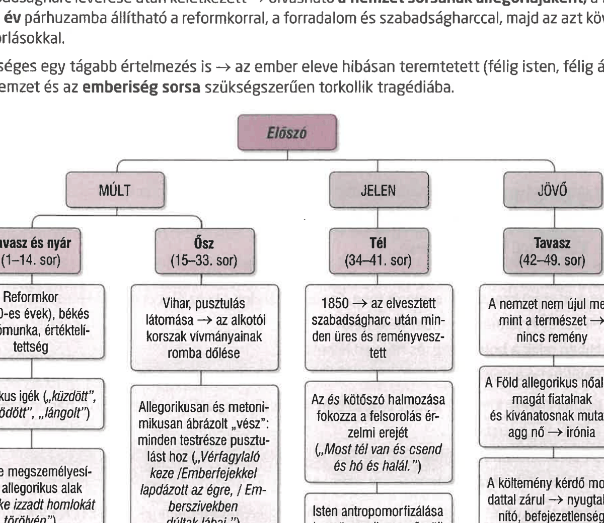

A reformkor, illetve a romantika tartalmi és formai sajátosságai Vörösmarty Mihály ódáiban
FELELETVÁZLAT
- Vörösmarty költeményeiben Kölcsey és Petőfi költészetéhez hasonlóan hangsúlyosan jelenik meg a közéleti tematika, az 1830-40-es években a nemzet felemelkedésének szükségessége, majd az 50-es években a szabadságharc bukása utáni korszak.
- Verseire a felvilágosodás célelvűségét tagadó, ciklikus történelemszemlélet jellemző.
Szózat
- Háttere az 1832-36-os pozsonyi országgyűlés feloszlatása. A haladó gondolkodású nemesek újítást és modernizációt jelöltek meg célul. Bécs ezt nem nézte jó szemmel, az ellenzék vezetőit börtönbe záratták, az országgyűlést feloszlatták, a reformtörekvéseket megtorpantották.
- Témája: hazaszeretetre való felszólítás, buzdítás a hazához való rendíthetetlen hűség hangsúlyozva.
- Műfaja: óda, típust tekintve idő- és értékszembesítő vers.
- Megszólított: a magyar nemzet (és a nagyvilág).
- Felépítése a szónoki beszédekhez hasonló: felhívást intéz a megszólítotthoz, indoklás követi, majd a megszólítás és felhívás megismétlése. A hangsúlyt a múltbeli helytállásra helyezi.
- 1-2. versszak: felszólítás a rendületlen hazaszeretetre.
- 3-12. versszak: a múlt és a jelen képei sorakoznak fel, dicső és tragikus mozzanatokkal.
- 13-14. versszak: a hazához való kötődés örök parancsa, a visszatérő felszólítással.
- Versformája: skót balladaforma, időmértékes és ütemhangsúlyos szerveződés, 8 és 6 szótagos jambikus lejtésű sorok, felező hangsúllyal.
- Retorikai eszközei közé tartoznak az ellentétek, anaforák, alliterációk, archaizálás, inverzek, megszólítások és túlzások.
Előszó
- Műfaja rapszódia. Hangneme fennkölt, zaklatott. Verstípusa idő- és értékszembesítő.
- Háttere: az elbukott szabadságharc miatti csalódottság, a reformkori látások elvesztése.
- A szabadságharc leverése után keletkezett, így a nemzet sorsának allegóriájaként is olvasható.
- Lehetséges tágabb értelmezése szerint az ember eleve hibásan teremtett lény, ezért a nemzet és az emberiség sorsa is könnyen tragédiába fordul.
- Az évszakok váltakozása, a múlt-jelen-jövő hármassága és a kozmikus távlatok adják a vers gondolati szerkezetét.
